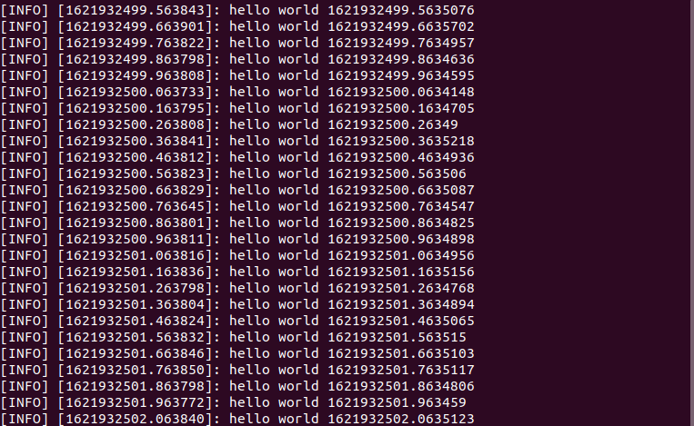
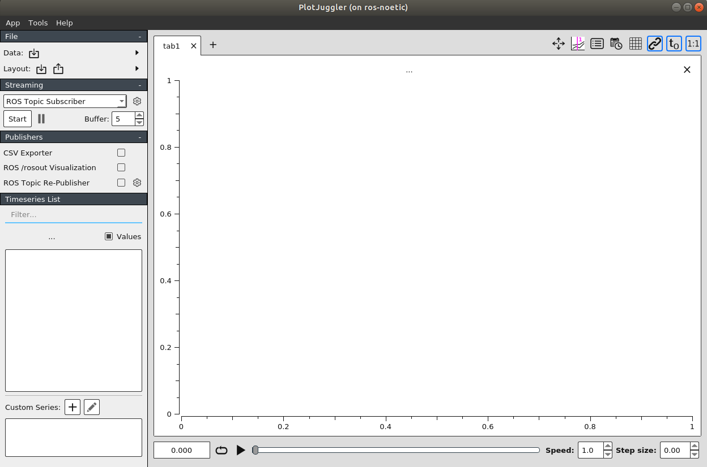

Learn
- In this section you will find all the necessary learning resources needed.
ROS Basics with Turtlesim
Nothing to show here.
Catkin Workspace
- catkin is the official build system of ROS and the successor to the original ROS build system, rosbuild.
- catkin combines CMake macros and Python scripts to provide some functionality on top of CMake's normal workflow.
- catkin was designed to be more conventional than rosbuild, allowing for better distribution of packages, better cross-compiling support, and better portability.
src
- the
srcfolder contains the source code of catkin packages. This is where you can extract/checkout/clone source code for the packages you want to build. - Each folder within the
srcfolder contains one or more catkin packages. This folder should remain unchanged by configuring, building, or installing. - The root of the
srcfolder contains a symbolic link to catkin's boiler-plate 'toplevel' CMakeLists.txt file. This file is invoked by CMake during the configuration of the catkin projects in the workspace. It can be created by callingcatkin_init_workspacein thesrcfolder directory. When we execute thecatkin_makecommand from the workspace folder, it checks inside thesrcfolder and builds each package.
build
- The
buildfolder is where CMake is invoked tobuildthe catkin packages in thesrcfolder. - CMake and catkin keep their cache information and other intermediate files here.
- The
buildfolder does not have to be contained within the workspace nor does it have to be outside of thesrcfolder, but this is recommended.
devel
- The development folder (or
develfolder) is where built targets are placed before installed. - The way targets are organized in the
develfolder is the same as their layout when they are installed. - This provides a useful testing and development environment which does not require invoking the installation step.
- The location of the
develfolder is controlled by a catkin specific CMake variable calledCATKIN_DEVEL_PREFIX, and it defaults to build/devel folder. - This is the default behavior because it might be confusing to CMake users if they invoked CMake in a
buildfolder and that modified things outside of the current directory. - It is recommended, however, to set the
develfolder directory to be a peer of thebuildfolder directory.
source ~/<workspace_name>/devel/setup.bash
Create a Catkin Workspace
- Open up the terminal
shortcut key: ctrl+alt+t. - Create the root workspace directory. You can name your directory anything we are using
workspaceas the name this time.
cd ~/
mkdir -p ~/workspace/src
cd workspace
- Run the following command:
catkin_make
- The catkin_make command is a convenience tool for working with catkin workspaces. Running it the first time in your workspace, it will create a CMakeLists.txt link in your 'src' folder.
- Additionally, if you look in your current directory you should now have a 'build' and 'devel' folder.
ls
- Now to make your workspace visible to ROS. Source the setup file in the devel directory.
source ~/catkin_ws/devel/setup.bash
By doing this, all the packages that you create inside the src folder will be visible to ROS.
7. This setup.bash file of your workspace must be source everytime when you want to use ROS packages created inside this workspace.
- To make sure your workspace is properly overlayed by the setup script, make sure ROS_PACKAGE_PATH environment variable includes the directory you're in.
echo $ROS_PACKAGE_PATH
/home/youruser/catkin_ws/src:/opt/ros/kinetic/share
ROS Package
- ROS Packages according to ROS Wiki
Software in ROS is organized in packages. A package might contain ROS nodes, a ROS-independent library, a dataset, configuration files, a third-party piece of software, or anything else that logically constitutes a useful module. The goal of these packages it to provide this useful functionality in an easy-to-consume manner so that software can be easily reused. In general, ROS packages follow a "Goldilocks" principle: enough functionality to be useful, but not too much that the package is heavyweight and difficult to use from other software.
Reference
Create a ROS Package
- This tutorial will demonstrate how to use the
catkin_create_pkgscript to create a new catkin package, and what you can do with it after it has been created.
-
First, navigate to the source space directory of the catkin workspace you've created.
cd ~/catkin_ws/src -
Now, use the catkin_create_pkg script to create a new package called pkg_ros_basics which depends on std_msgs, roscpp, and rospy:
catkin_create_pkg pkg_ros_basics std_msgs rospy roscpp-
This will create a beginner_tutorials folder which contains a
package.xmland aCMakeLists.txt, which have been partially filled out with the information you gavecatkin_create_pkg. -
catkin_create_pkgrequires that you give it apackage_nameand optionally a list of dependencies on which that package depends:catkin_create_pkg <package_name> [depend1] [depend2] [depend3]
-
-
Now, you need to build the packages in the catkin workspace:
cd ~/catkin_ws catkin build
- Inside the package, there are
srcfolder,package.xml,CMakeLists.txt, and theincludefolders.- CMakeLists.txt: This file has all the commands to build the ROS source code inside the package and create the executable. For more information about CMakeLists visit here.
- package.xml: This is an XML file. It mainly contains the package dependencies, information, and so forth.
- src: The source code of ROS packages are kept in this folder.
ROS Nodes
-
A ROS Node is a piece of software/executable that uses ROS to communicate with other ROS Nodes.
-
ROS Nodes are building block of any ROS Application.
-
For example, if you have a wall-following robot then one ROS Node could get distance sensor values and another node can control the motors of the robot. So, these two nodes will communicate with each other in order to move the robot.
-
You can write your entire ROS Application in a single node but having multiple nodes ensures that if a node crashes it won't crash your entire ROS application.
-
In this eYRC Theme your job will be to write suitable ROS Nodes for your ROS Application.
-
A ROS package can have multiple ROS Nodes.
-
Python and C++ are majorly used to write ROS Nodes.
-
In this eYRC Theme we will use Python to write ROS Nodes.
Reference
Create a ROS Node
In this section we will learn how to create a ROS Node inside pkg_ros_basics ROS Package which we created in the previous section.
-
Navigate to
pkg_ros_basics.cd ~/catkin_ws/src/pkg_ros_basicsOR
roscd pkg_ros_basicsNOTE:
roscdwill work only if you have sourcedsetup.bashof your catkin workspace. -
Create a
scriptsfolder for your Python scripts and navigate into the folder.mkdir scripts cd scripts -
Create a Python script called
node_hello_ros.py.touch node_hello_ros.py -
Open the script in any text-editor and start editing.
gedit node_hello_ros.py -
First line of all your Python ROS scripts should be the following shebang
#!/usr/bin/env python -
Now write a ROS Node to print
Hello World!on the console.#!/usr/bin/env python import rospy def main(): # 1. Make the script a ROS Node. rospy.init_node('node_hello_ros', anonymous=True) # 2. Print info on console. rospy.loginfo("Hello World!") # 3. Keep the node alive till it is killed by the user. rospy.spin() if __name__ == '__main__': try: main() except rospy.ROSInterruptException: pass -
Now you have to make this script an executable.
sudo chmod +x node_hello_ros.py -
Now in order to run your ROS Node,
-
Open up a terminal and run ROS Master.
roscore -
Once the roscore is up running, open a new termminal and run the ROS Node.
rosrun pkg_ros_basics node_hello_ros.pyNOTE: This command will work only if you have sourced
setup.bashof your catkin workspace either manually or using.bashrc.
-
-
You should get some output like this,
[INFO] [1601277063.968749]: Hello World!
Command: rosrun
rosrun allows you to run an executable in an arbitrary package from anywhere without having to give its full path or cd/roscd there first.
Usage:
rosrun <package> <executable>
<package> is nothing but the package name which you have created using catkin_create_pkg command or used any other package.
<executable> is the python or cpp file.
To create an executable python file
After creating a package, create a folder in the package names as scripts folder to store all the python files in that folder.
cd ~/catkin_ws/src/<package>
mkdir scripts
Here we can create python scripts by running this command by going into the scripts directory,
cd scripts
touch filename.py
Now you can edit your python file and before running you have to make it executable by running this command once,
cd ~/catkin_ws/src/<package>/scripts
chmod +x filename.py
To create an executable cpp file
After creating a package, create a folder in the package names as src folder to store all the cpp files in that folder.
cd ~/catkin_ws/src/<package>
mkdir src
Here we can create cpp files by running this command by going into the src directory,
cd src
touch filename.cpp
Now you can edit your cpp file , but for making it executable we have to edit the CMakeLists.txt file which is present in the package.
Add these few lines at the bottom of CMakeLists.txt file,
add_executable(filename src/filename.cpp)
target_link_libraries(filename ${catkin_LIBRARIES})
Then run this command,
cd ~/catkin_ws
catkin build
Command: rosnode
rosnode contains the rosnode command-line tool for displaying debug information about ROS Nodes.
Note: For quick information about any command, be that outside of ROS, simply type the command along with suffix `--h` or `-help`. This is a widely used concept among other Linux commands for quick references. Here's an example for `rosnode --h` command

list
rosnode list displays a list of all current nodes.
Let's figure out what argument the list sub-command needs. In a new terminal run start the rosmaster:
roscore
And in another terminal, run:
rosrun rospy_tutorials talker
And in another terminal, run:
rosnode list
Now the node named talker(node with word talker in it) will be printed on the terminal.

info
rosnode info /node_name displays information about a node, including publications and subscriptions.
Let's figure out what argument the info sub-command needs. In a new terminal run start the rosmaster:
roscore
And in another terminal, run:
rosrun rospy_tutorials talker
And in another terminal, run:
rosnode info <talker_node>
This should give details related to the particular node as shown below:

kill
IMPORTANT: rosnode kill is not guaranteed to succeed. Let's figure out what argument the kill sub-command needs. In a new terminal run start the rosmaster:
roscore
And in another terminal, run:
rosrun rospy_tutorials talker
And in another terminal, run:
rosnode kill rosout <talker_node>

Interactive mode. This enables you to select which node to kill from a numbered list, which is useful for killing anonymous nodes.
rosnode kill
1. /rosout
Please enter the number of the node you wish to kill.
ROS Master
-
The ROS Master provides naming and registration services to the rest of the nodes in the ROS system.
-
As you know ROS Nodes are building blocks of any ROS Application. A single ROS Application may have multiple ROS Nodes which communicate with each other.
-
The role of the ROS Master is to enable individual ROS nodes to locate one another.
-
Once these nodes have located each other they communicate with each other peer-to-peer.
-
You can say, communication is established between nodes by the ROS Master. So, without ROS Master running ROS Nodes can not communicate with each other.
Start ROS Master
To start ROS Master you just have to enter the following command in the terminal.
roscore

roscore is a collection of nodes and programs that are pre-requisites of a ROS-based system. You must have a roscore running in order for ROS nodes to communicate.
So roscore will start the following:
- ROS Master
- ROS Parameter Server
rosoutLogging Node
In the preceding output, you can see information about the computer, parameter which list the name (noetic) and version number of ROS distribution, and some other information.
Reading Assignment
ROS Parameter Server
-
You can think Parameter Server as a space where all the necessary data that needs to be shared among various ROS Nodes is stored.
-
Parameter Server runs inside ROS Master.
-
ROS Nodes can view and even modify data stored in the Parameter Server.
-
Typically Parameter Server is used to store configuration parameters.
Reading Assignment
Load Parameters using YAML file
In this section we will learn how to load your own parameters in ROS Parameter Server using a YAML File.
Steps
-
Navigate to
pkg_ros_basics.cd ~/workspace/src/pkg_ros_basicsOR
roscd pkg_ros_basicsNOTE:
roscdwill work only if you have sourcedsetup.bashof your catkin workspace. -
Create a
configfolder for your Python scripts and navigate into the folder.mkdir config cd config -
Create a configuration YAML file called
config_my.yaml.touch config_my.yaml -
Open the script in any text-editor and start editing.
gedit config_my.yaml -
Now fill your config file.
# Comment: config_my.yaml Configuration details: name: first: "Heisenberg" # First Name last: "White" # Last Name contact: address: "ABQ Street, ABQ" # Address phone: 77777 # Contact-
ROS Build system will create a Python Dictionary called
details. -
This dictionary will have two keys,
- Dictionary
name - Dictionary
contact
- Dictionary
-
In your ROS Node you can use
rospyto get parameters stored in thisconfig_mydictionary.param_config_my = rospy.get_param('details') first_name = param_config_my['name']['first'] phone = param_config_my['contact']['phone']
-
-
Now if you want to load the parameters defined in the YAML file you have to first start the ROS Parameter Server.
Open up a new terminal and enter the following.
roscore -
Now load your parameters.
rosparam load config_my.yaml -
Now get the list of parameters loaded in your ROS Parameter Server.
rosparam listOutput:
/details/contact/address /details/contact/phone /details/name/first /details/name/last /rosdistro /roslaunch/uris/host_ros_noetic__35261 /rosversion /run_idHere you can see the first four parameters are loaded from our
config_my.yamlfile. -
Now to view the content of any parameter do the following.
rosparam get /details/contact/phoneOutput:
77777This is the value which we defined in the
config_my.yamlfile.
Example #1: ROS Node to Get and Set Parameters
Aim
To write a ROS Node to read config_my.yaml file loaded in ROS Parameter Server (done here), print it on the console and modify the phone number.
Code
node_param_get_set.py
#!/usr/bin/env python3
import rospy
def main():
# 1. Make the script a ROS Node.
rospy.init_node('node_param_get_set', anonymous=True)
# 2. Read from Parameter Server
rospy.loginfo("Reading from Parameter Server.")
param_config_my = rospy.get_param('details') # Get all the parameters inside 'details'
# Store the parameters in variables
first_name = param_config_my['name']['first']
last_name = param_config_my['name']['last']
address = param_config_my['contact']['address']
phone = param_config_my['contact']['phone']
# Print the parameters
rospy.loginfo(">> First Name: {}".format(first_name))
rospy.loginfo(">> Last Name: {}".format(last_name))
rospy.loginfo(">> Address: {}".format(address))
rospy.loginfo(">> Phone: {}".format(phone))
# 3. Modify the Phone Number
rospy.set_param('/details/contact/phone', 55555) # Modify only Phone Number in Parameter Server
new_phone = rospy.get_param('/details/contact/phone') # Get only Phone Number from Parameter Server
rospy.loginfo(">> New Phone: {}".format(new_phone)) # Print the new Phone Number
if __name__ == '__main__':
try:
main()
except rospy.ROSInterruptException:
pass
NOTE: Make sure you make the
pkg_ros_basics node_param_get_set.pyscript executable.
Output:
rosrun pkg_ros_basics node_param_get_set.py

- The code is self-explanatory.
- If you are not able to understand the code feel free to seek help from us.
ROS Launch Files
-
In the previous sections you must have noticed that we need to use
roscorecommand to start ROS Master and Parameter Server,rosruncommand to run a ROS Node,rosparam loadcommand to load parameters etc. -
This is a tedious process to manually run nodes and load parameters.
-
Launch files provides the capability to do all these stuff using a single command.
-
The idea is to mention all the nodes that you want to run, all the config file that you want to load etc. in a single file which you can run using
roslaunchcommand.
Reading Assignment
Create a ROS Launch File
roslaunch Command
-
roslaunchis a tool for easily launching multiple ROS nodes locally and remotely via SSH. -
It includes options to automatically respawn processes that have already died.
roslaunchtakes in one or more XML configuration files (with the .launch extension) that specify the parameters to set and nodes to launch. -
Usage:
roslaunch <package> file.launch<package>is nothing but the package name which you have created usingcatkin_create_pkgcommand or used any other package.
Steps to create a launch file
-
After creating a package, create a folder in the package names as a
launchfolder to store all the launch files in that folder.cd ~/catkin_ws/src/<package> mkdir launch -
Here we can create launch files by running this command by going into the
launchdirectory, we can keep any name for the launch file,cd launch touch filename.launchNow you can edit your launch file by adding different nodes that you have to run simultaneously.
Steps to add a ROS node in the launch file
-
Launch files always starts with
<launch>and end with
</launch> -
Now to add any executable file which we have seen in the rosrun_command section, we have to add this line,
<node pkg="name_of_package" type="name_of_executable.py" name="name_of_executable" output="screen"/>pkgis the package name which you have createdtypeis the name of executable filenameis the name of the node which is created in that executableoutputmeans it will print the data given to the roslog command
Steps to load Config YAML file in ROS Parameter Server
- You can use
rosparamtag to load the YAML file.<rosparam file ="$(find name_of_package)/config/config.yaml"/>name_of_packageis the name of your ROS package.config.yamlis the name of your configuration file.
Steps to add a Shell Script in the launch file
-
You can use
nodetag to run any shell script using launch file<node pkg="name_of_package" type="shell_script.sh" name="shell_script" output="screen"> <param name="cmd" value="$(find name_of_package)/launch/shell_script.sh"/> </node>name_of_packageis the name of your ROS package.shell_script.shis the name of your configuration file./launch/shell_script.shis the location of the shell script inside your ROS Package folder.
Example #1: Launch two ROS Nodes
Aim
- To launch
talkerandlistenernode present inrospy_tutorialspackage. - For this create a
chatter.launchfile and save it in thelaunchfolder insidepkg_ros_basicspackage.
NOTE: To install
rospy_tutorialspackage in your system you can runsudo apt-get install ros-noetic-ros-tutorialsthis command.
Once installed, you can use listener python script and talker executable written in C++ present in rospy_tutorials package.
Code
chatter.launch
<launch>
<node name="talker" pkg="rospy_tutorials" type="talker" output="screen"/>
<node name="listener" pkg="rospy_tutorials" type="listener.py" output="screen"/>
</launch>
- Here first
talker.cppfile (for cpp file we dont need to add .cpp extension) has been included with the node name as talker and also set output as screen so you can see the output from talker node. - Next we have added
listener.pywhich has node name as listener and here also we have set output as screen.
Run Command
Now run these command to run the launch file,
roslaunch pkg_ros_basics chatter.launch
Output

Example #2: Launch Turtle in Forest
Aim
-
To write a launch file to run
turtlesim_nodenode andturtle_teleop_keynode present inturtlesimpackage. -
While launching the
turtlesim_nodemake sure to change the background colour of the simulator from blue to forest green. -
Name the launch file
turtlesim.launchand save it inlaunchfolder insidepkg_ros_basicspackage.
Code
turtlesim.launch
<launch>
<node pkg="turtlesim" type="turtlesim_node" name="node_turtlesim_node">
<param name="/background_r" value="34" />
<param name="/background_g" value="139" />
<param name="/background_b" value="34" />
</node>
<node pkg="turtlesim" type="turtle_teleop_key" name="node_turtle_teleop_key" />
</launch>
Run Command
roslaunch pkg_ros_basics turtlesim.launch
Output

- The code is self-explanatory. - If you are not able to understand the code feel free to seek help from us. ---
Example #3: Load YAML
Aim
- To write a launch file to load
config_my.yamlpresent inpkg_ros_basicspackage. - Also launch the
node_param_get_set.pyROS node after loading the YAML file.
Code
load_yaml.launch
<launch>
<rosparam file ="$(find pkg_ros_basics)/config/config_my.yaml"/>
<node pkg="pkg_ros_basics" type="node_param_get_set.py" name="node_param_get_set" output="screen"/>
</launch>
Run Command
roslaunch pkg_ros_basics load_yaml.launch
Output

- The code is self-explanatory. - If you are not able to understand the code feel free to seek help from us. ---
Example #4: Launch Shell Script and ROS Node
Aim
-
To write a launch file called
web_node.launchto opene-yantra.orgin firefox and runnode_hello_ros.pyofpkg_ros_basics. -
You need to write a shell script called
webpage_launch.shto opene-yantra.orgin firefox and save it inlaunchfolder ofpkg_ros_basics.
Code
webpage_launch.sh
#!/bin/bash
# Store URL in a variable
URL1="https://www.e-yantra.org/"
# Print some message
echo "** Opening $URL1 in Firefox **"
# Use firefox to open the URL in a new window
firefox -new-window $URL1
node_hello_ros.py
#!/usr/bin/env python3
import rospy
def main():
# 1. Make the script a ROS Node.
rospy.init_node('node_hello_ros', anonymous=True)
# 2. Print Hello World!
rospy.loginfo("Hello World!")
if __name__ == '__main__':
try:
main()
except rospy.ROSInterruptException:
pass
NOTE: You need to make these shell script and python script executable using
chmodbefore using it in a launch file.
web_node.launch
<launch>
<node pkg="pkg_ros_basics" type="webpage_launch.sh" name="webpage_launch" output="screen">
<param name="cmd" value="$(find pkg_ros_basics)/launch/webpage_launch.sh"/>
</node>
<node pkg="pkg_ros_basics" type="node_hello_ros.py" name="node_hello_ros" output="screen"/>
</launch>
Run Command
roslaunch pkg_ros_basics web_node.launch
Output

- The code is self-explanatory. - If you are not able to understand the code feel free to seek help from us. ---
ROS Communication
-
In ROS there are essentially three ways in which two nodes can communicate with each other. These are,
- ROS Topics
- ROS Services
- ROS Actions
-
We will learn about all these three in this section.
ROS Topics
-
ROS Topics allow unidirectional communication between ROS Nodes.
-
When using ROS Topics a ROS Node can be a publisher, subscriber or both.
-
A ROS Node acting as a publisher can publish data on a ROS Topic and a subscriber ROS Node can subscribe to a ROS Topic.
-
Publisher and Subscriber Nodes will exchange ROS Messages over a ROS Topic.
-
A ROS Message is a simple data structure, comprising typed fields (integer, floating point, boolean, etc.). So a ROS Message can hold data of various data-types.
-
Consider this analogy,
-
Let's say you are subscribed to a newspaper called The Noetic published by a publishing house called OSRF.
-
Every morning your paperboy Jon Doe will deliver this newspaper to you.
-
You like The Noetic because it has dedicated section on sports and robotics news.
-
In this analogy you can think,
-
OSRF <--> ROS Publisher NodeOSRF which is publishing the newspaper as a Publisher Node.
-
You <--> ROS Subscriber NodeYou along with your neighbours who are subscribed to this newspaper as Subscriber Nodes.
-
Jon Doe <--> ROS TopicYour paperboy who is taking the newspaper from the publisher and delivering it to its subscribers as a ROS Topic.
-
The Noetic Newspaper <--> ROS MessageThe physical newspaper is your ROS Message.
-
Sports and Robotics Sections of The Noetic <--> Data Fields defined in ROS MessageThe sections of the newspaper is the Data Fields defined in the ROS Message.
-
-
Reading Assignment
Command: rostopic
rostopic contains the rostopic command-line tool for displaying debug information about ROS Topics, including publishers, subscribers, publishing rate, and ROS Messages.
Reference: http://wiki.ros.org/rostopic
Note: For quick information about any command, be that outside of ROS, simply type the command along with suffix
--hor-help. This is a widely used concept among other Linux commands for quick referencing. Here's an example forrostopic --hcommand

As you can see in the above image, there are multiple suffixes associated with rostopic, these suffixes are the commands to analyze any existing or developing system. We'll look into this sub-command or suffixes one by one.
list
-
rostopic listreturns a list of all topics currently subscribed to and published. -
Let's see this command's actual output. In a new terminal start the roscore:
roscoreNote: Do not close this terminal, otherwise you won't be able to communicate with the rosmaster while executing some of its features.
-
And in another terminal, run:
rostopic listThis should give something like the following image, which is the ROS's default topics.

-
For this tutorial, we will also use turtlesim. Please run in a new terminal:
rosrun turtlesim turtlesim_nodeYou will see a small blue box with probably a different turtle within it.

-
Now, check again the
rostopic listcommand in another terminal and observe the topics being subscribed or published.
Note: You can know more about these listed topics, by simply adding arguments as a suffix to
rostopic list. And to know which arguments does what typerostopic list --help. Go ahead and experiment.
type, info and rosmsg
type
Communication on topics happens by sending ROS messages between nodes. To communicate, the publisher and subscriber must send and receive the same type of message. This means that a topic type is defined by the message type published on it. The type of the message sent on a topic can be determined using rostopic type.
rostopic type [topic]
-
From the previous section, we know that the turtlesim node has 3 topics being published/subscribed.
/turtle1/cmd_vel/turtle1/pose/turtle1/color_sensor
-
Lets consider the topics
/turtle1/cmd_vel. Enter the following command to get the message type.rostopic type /turtle1/cmd_vel
rosmsg
-
As you can observe the type of message associated with
/turtle1/cmd_velisgeometry_msgs/Twist. let's look into more detail of the message, usingrosmsg show [messageType]command:rosmsg show geometry_msgs/Twist
-
A message consists of two parts, field and constant. Simply, fields is the datatype and constants are the representative value. From the above figure, you can observe that these field and constants are displayed twice. However, both of these sections, are separate since they have a different header or different sub-information from the same robot. The 2 headers seen are...
-
geometry_msgs/Vector3 linear:Describes the linear velocities of all the 3 axes. -
geometry_msgs/Vector3 angular:While this header describes, angular velocities of all 3 axes.
-
For more details regarding messages in ROS refer to wiki.ros.org/msg.
For more information on
geometry_msgs/Twistrefer, this thread of Stackoverflow forum.
info
- This command provides a little more detail about topics then
typeargument.
rostopic info /turtle1/cmd_vel
-
The output of this command will yield both
- the message type and
- the nodes which are publishing it or subscribing it.

pub
-
rostopic pubpublishes data on to a topic currently advertised. -
Usage:
rostopic pub [topic] [msg_type] [args]
- Let's move the turtle inside the turtlsim window.
rostopic pub /turtle1/cmd_vel geometry_msgs/Twist "linear:
x: 0.0
y: 0.0
z: 0.0
angular:
x: 0.0
y: 0.0
z: 0.0"
Here we recommend to double tap the TAB button after
/turtle1/cmd_vel(don't forget the space after the topic name). You'll see the message type appearing after a few instance. Similarly, double tapping after 'geometry_msgs/Twist' will make the corresponding message content appear automatically. Try it with other commands too.

- Now that we have the complete blank (with all constants as zeros) pub command for
/turtle1/cmd_vel, let's rotate it about its z-axis (Yep! the Omega variable).
rostopic pub /turtle1/cmd_vel geometry_msgs/Twist "linear:
x: 0.0
y: 0.0
z: 0.0
angular:
x: 0.0
y: 0.0
z: 0.5
- After executing the above command you will see the turtle rotating clockwise.

-
However, the turtle only rotated for a while and not continuously. This is because our
pubcommand was only sent once. So, to keep the turtle rotating we need to keep sending ourpubcommand repeatedly. And to do so, we'll use the-rargument withpubcommand. -
The following command is used to publish a steady stream of commands at a rate of 10Hz.
rostopic pub -r 10 /turtle1/cmd_vel geometry_msgs/Twist "linear:
x: 2.0
y: 0.0
z: 0.0
angular:
x: 0.0
y: 0.0
z: 1.8"

- You can always know more about
pubcommand by simply typingrostopic pub --help.
For more details refer, http://wiki.ros.org/rostopic#rostopic_pub
echo
-
rostopic echoshows the data published on a topic. -
Usage:
rostopic echo [topic]
-
In the earlier section, at the end, we used
-rargument to keep it rotation at an angular velocity of 0.5 units. But what if the velocity is unknown and we need this information as feedback to control the motion of turtle??? -
Our desire here is to get the pose information or simply one or all of the turtle's x,y, and z values w.r.t to the world.
-
But let's see if there is any data being published by the turtlesim node in the first place. To do so, we'll use the following command...
rostopic list -p

-
From the
-pwe know 2 topic is being published/turtle1/color_sensor/turtle1/pose
-
Let's see more into the
/turtle1/posetopic.

-
Luckily the pose information of turtle from the turtlesim is being published on the topic
/turtle1/pose. -
To display the pose data, enter the following command...
rostopic echo /turtle1/pose

Example #1: Pub-Sub with Custom Message
Aim
To write a listener and talker node which should communicate with each other over a ROS Topic called my_topic using a custom ROS Message called myMessage with the following data fields of the following data types.
- int32 id
- string name
- float32 temperature
- float32 humidity
Steps
Create Custom ROS Message
-
Messages are just simple text files with a field type and field name per line.
-
They are stored in the
msgdirectory of your package.
-
Create a file and name it
myMessage.msgand store it in amsgfolder ofpkg_ros_basics. If the folder does not exist create it. -
Now fill the
myMessage.msgfile with the following content.int32 id string name float32 temperature float32 humidityThis is the format of a typical
msgfile. -
Now open your
package.xmlfile ofpkg_ros_basicspackage and add in the dependencies for yourgeometry_msgs,message_generationandmessage_runtimeas seen below.<?xml version="1.0"?> <package format="2"> <name>pkg_ros_basics</name> <version>0.0.0</version> <description>The pkg_ros_basics package</description> <maintainer email="ubuntu@todo.todo">ubuntu</maintainer> <license>TODO</license> <buildtool_depend>catkin</buildtool_depend> <build_depend>roscpp</build_depend> <build_depend>rospy</build_depend> <build_depend>std_msgs</build_depend> <build_export_depend>roscpp</build_export_depend> <build_export_depend>rospy</build_export_depend> <build_export_depend>std_msgs</build_export_depend> <exec_depend>roscpp</exec_depend> <exec_depend>rospy</exec_depend> <exec_depend>std_msgs</exec_depend> <build_depend>message_generation</build_depend> <exec_depend>message_runtime</exec_depend> <build_depend>geometry_msgs</build_depend> <exec_depend>geometry_msgs</exec_depend> <export> </export> </package> -
Now open your
CMakeList.txtfile ofpkg_ros_basicspackage and navigate to the following block of code in your file.# add_message_files( # FILES # Message1.msg # Message2.msg # )Uncomment the Messages and add include the name of your Message files. You can include multiple Message files if required as well.
Now your
CMakeLists.txtshould look like this,cmake_minimum_required(VERSION 3.0.2) project(pkg_ros_basics) find_package(catkin REQUIRED COMPONENTS roscpp rospy std_msgs geometry_msgs message_generation ) add_message_files( FILES myMessage.msg ) generate_messages( DEPENDENCIES std_msgs geometry_msgs ) catkin_package( # INCLUDE_DIRS include # LIBRARIES pkg_ros_basics CATKIN_DEPENDS roscpp rospy std_msgs geometry_msgs message_runtime # DEPENDS system_lib ) ########### ## Build ## ########### ## Specify additional locations of header files ## Your package locations should be listed before other locations include_directories( # include ${catkin_INCLUDE_DIRS} ) -
After this build your package.
cd ~/workspace catkin_makeOnce the package is build successfully you can see
myMessage.hfile located at~/workspace/devel/include/pkg_ros_basics/myMessage.h. This will be used by ROS Nodes to communicate over a ROS Topic usingmyMessageROS Message.
Code - ROS Nodes
Listener Node
node_myMsg_listener.py
#!/usr/bin/env python3
import rospy
from pkg_ros_basics.msg import myMessage
def func_callback_topic_my_topic(myMsg):
rospy.loginfo("Data Received: (%d, %s, %.2f, %.2f)", myMsg.id,
myMsg.name, myMsg.temperature, myMsg.humidity)
def main():
# 1. Initialize the Subscriber Node.
rospy.init_node('node_myMsg_listener', anonymous=True)
# 2. Subscribe to the desired topic and attach a Callback Funtion to it.
rospy.Subscriber("my_topic", myMessage, func_callback_topic_my_topic)
# 3. spin() simply keeps python from exiting until this node is stopped
rospy.spin()
# Python Main
if __name__ == '__main__':
try:
main()
except rospy.ROSInterruptException:
pass
Talker Node
node_myMsg_talker.py
#!/usr/bin/env python3
import rospy
from pkg_ros_basics.msg import myMessage
import random
def main():
# 1. Create a handle to publish messages to a topic.
var_handle_pub = rospy.Publisher('my_topic', myMessage, queue_size=10)
# 2. Initializes the ROS node for the process.
rospy.init_node('node_myMsg_talker', anonymous=True)
# 3. Set the Loop Rate
var_loop_rate = rospy.Rate(1) # 1 Hz : Loop will its best to run 1 time in 1 second
# 4. Write the infinite Loop
while not rospy.is_shutdown():
obj_msg = myMessage()
obj_msg.id = 1
obj_msg.name = "my_message"
obj_msg.temperature = 10 + random.random()
obj_msg.humidity = 20 + random.random()
rospy.loginfo("Publishing: ")
rospy.loginfo(obj_msg)
var_handle_pub.publish(obj_msg)
var_loop_rate.sleep()
# Python Main
if __name__ == '__main__':
try:
main()
except rospy.ROSInterruptException:
pass
Output
For analyzing the output for these custom messages, you can follow the following steps
-
roscore- As seen in previous tutorials, you must have a roscore running for the nodes to communicate. To view the messages between the talker and listener nodes, run an instance of roscore in a separate terminal window -
listener node - For making the script of your node executable run
chmod +xwithin the appropriate directory in a separate terminal window other than where your roscore is running. To run the listener node, run the following commands within your appropriate directoryrosrun <package_name> <listener_node.py> -
talker node - You can follow the same steps mentioned above for running your talker node using the commands
rosrun <package_name> <talker_node.py>
If you follow the steps given above, you should see the following output
rosrun pkg_ros_basics node_myMsg_talker.py

```bash rosrun pkg_ros_basics node_myMsg_listener.py ```

- If you face any problems while following this tutorial you can feel free to reach out to us.
ROS Services
-
The publish/subscribe model is a very flexible communication paradigm, but its many-to-many one-way transport is not appropriate for request/reply interactions, which are often required in a distributed system.
-
Request/reply is done via a Service, which is defined by a pair of messages: one for the request and one for the reply.
-
A providing ROS node offers a service under a string name, and a client calls the service by sending the request message and awaiting the reply.
-
Client libraries usually present this interaction to the programmer as if it were a remote procedure call.
-
Services are defined using
srvfiles, which are compiled into source code by a ROS client library. -
Like topics, services have an associated service type that is the package resource name of the
.srvfile.
Reading Assignment
Create a srv file
Steps
-
Create a custom ROS Package or use any existing package like
pkg_ros_basics. -
Go into the package directory and create a folder called
srv.roscd <package_name> mkdir srv -
Instead of creating a new srv definition by hand, we will copy an existing one from another package. For that,
roscpis a useful commandline tool for copying files from one package to another. Usage:roscp [package_name] [file_to_copy_path] [copy_path]Now we can copy a service from the
rospy_tutorialspackage:roscp rospy_tutorials AddTwoInts.srv srv/AddTwoInts.srvThe srv file is,
int64 a int64 b --- int64 sumHere
aandbholds the request data which is sent by the Client to the Server andsumis the response which is sent by the Server to the Client. -
Open
package.xml, and make sure these two lines are in it and uncommented:<build_depend>message_generation</build_depend> <exec_depend>message_runtime</exec_depend> -
Add the
message_generationdependency to generate messages inCMakeLists.txt: Do not just add this line to your CMakeLists.txt, modify the existing linefind_package(catkin REQUIRED COMPONENTS roscpp rospy std_msgs message_generation ) -
Remove
#to uncomment the following lines:# add_service_files( # FILES # Service1.srv # Service2.srv # )And replace the placeholder
<service_name>.srvfiles for your service files:add_service_files( FILES AddTwoInts.srv ) -
Unless you have already done this in the previous steps, change in
CMakeLists.txt. :# generate_messages( # DEPENDENCIES # # std_msgs # Or other packages containing msgs # )Uncomment it and add any packages you depend on which contain
.msgfiles that your messages use (in this case std_msgs), such that it looks like this:generate_messages( DEPENDENCIES std_msgs )
- Go to
workspacedirectory and run:catkin_make
rossrv Command
The rossrv command-line tool displays information about ROS services. It has the exact same usage as rosmsg (see what it offers when it runs without sub-command below):
rossrv -h
rossrv show pkg_ros_basics/AddTwoInts

Test ROS Services - Server and Client
For in depth code details in python language Click here
For in depth code details in Cpp language Click here
- We will use an example from
rospy_tutorials.
Steps
-
First, run
roscorecommand in a new terminal.roscore -
Then run this command in a new terminal:
rosrun rospy_tutorials add_two_ints_server -
Run this command in the new terminal for adding integer 12 and integer 20:
rosrun rospy_tutorials add_two_ints_client 12 20
Output
rosrun rospy_tutorials add_two_ints_server
Returning [12 + 20 = 32]
Returning [12 + 20 = 32]
rosrun rospy_tutorials add_two_ints_client 12 20
Requesting 12+20
12 + 20 = 32
ROS Actions
- In any large ROS based system, here are cases when someone would like to send a request to a node to perform some task, and also receive a reply to the request. This can currently be achieved via
ROS services. - However, in some cases the sevices takes a long time to execute.
- The user might want the ability to cancel the request during execution or get periodic feedback about how the request is progressing.
- The
actionlibpackage provides tools to create servers that execute long-running goals that can be preempted - It also provides a client interface in order to send requests to the server.
- The action specification is defined using a
.actionfile. The.actionfile has the goal definition, followed by the result definition, followed by the feedback definition, with each section separated by 3 hyphens (---).
Reference
- More details about how actionlib operates "under the hood" are here
Create an action message file
Before writing an action it is important to define the goal, result, and feedback messages. The action messages are generated automatically from the .action file, for more information on action files see the actionlib documentation. This file defines the type and format of the goal, result, and feedback topics for the action. Create actionlib_tutorials/action/Fibonacci.action in your favorite editor, and place the following inside it:
#goal definition
int32 order
---
#result definition
int32[] sequence
---
#feedback
int32[] sequence
To automatically generate the message files during the make process, a few things need to be added to CMakeLists.txt.
-
add the actionlib_msgs package to the find_package macro's argument like this (if you used catkin_create_package to generate CMakeLists.txt, this may already have been added):
find_package(catkin REQUIRED COMPONENTS actionlib_msgs)-
Note that CMake needs to find_package actionlib_msgs (message_generation does not need to be listed explicitly, it is referenced implicitly by actionlib_msgs).
-
use the add_action_files macro to declare the actions you want to be generated:
add_action_files( DIRECTORY action FILES Fibonacci.action ) -
-
call the generate_messages macro, not forgetting the dependencies on actionlib_msgs and other message packages like std_msgs:
generate_messages( DEPENDENCIES actionlib_msgs std_msgs # Or other packages containing msgs ) -
add actionlib_msgs to catkin_package macro like this:
catkin_package( CATKIN_DEPENDS actionlib_msgs )- catkin_package also specifies only CATKIN_DEPEND to actionlib_msgs. The transitive dependency on message_runtime is happening automatically.
Note: Sometimes you have to setup your package.xml, since we are generating messages you have to declare on the manifest file that at run time you have to generate messages. You could just insert the follow line.
<exec_depend>message_generation</exec_depend>
Now by following, automatically generate msg files of your action files, and also see the result.
$ cd ../.. # Go back to the top level of your catkin workspace
$ catkin_make
$ ls devel/share/actionlib_tutorials/msg/
FibonacciActionFeedback.msg FibonacciAction.msg FibonacciFeedback.msg
FibonacciResult.msg FibonacciActionGoal.msg FibonacciActionResult.msg FibonacciGoal.msg
$ ls devel/include/actionlib_tutorials/
FibonacciActionFeedback.h FibonacciAction.h FibonacciFeedback.h FibonacciResult.h
FibonacciActionGoal.h FibonacciActionResult.h FibonacciGoal.h
To manually generate the message files from this file, use the script genaction.py from the actionlib_msgs package.
Reference
Simple Action Server & Client
- This tutorial covers using the simple_action_server library to create a Fibonacci action server in Python. This example action server generates a Fibonacci sequence, the goal is the order of the sequence, the feedback is the sequence as it is computed, and the result is the final sequence.
Writing a Simple Server
- The following code can be found in actionlib_tutorials/simple_action_servers/fibonacci_server.py, and implements a python action server for the fibonacci action.
#! /usr/bin/env python
import rospy
import actionlib
import actionlib_tutorials.msg
class FibonacciAction(object):
# create messages that are used to publish feedback/result
_feedback = actionlib_tutorials.msg.FibonacciFeedback()
_result = actionlib_tutorials.msg.FibonacciResult()
def __init__(self, name):
self._action_name = name
self._as = actionlib.SimpleActionServer(self._action_name, actionlib_tutorials.msg.FibonacciAction, execute_cb=self.execute_cb, auto_start = False)
self._as.start()
def execute_cb(self, goal):
# helper variables
r = rospy.Rate(1)
success = True
# append the seeds for the fibonacci sequence
self._feedback.sequence = []
self._feedback.sequence.append(0)
self._feedback.sequence.append(1)
# publish info to the console for the user
rospy.loginfo('%s: Executing, creating fibonacci sequence of order %i with seeds %i, %i' % (self._action_name, goal.order, self._feedback.sequence[0], self._feedback.sequence[1]))
# start executing the action
for i in range(1, goal.order):
# check that preempt has not been requested by the client
if self._as.is_preempt_requested():
rospy.loginfo('%s: Preempted' % self._action_name)
self._as.set_preempted()
success = False
break
self._feedback.sequence.append(self._feedback.sequence[i] + self._feedback.sequence[i-1])
# publish the feedback
self._as.publish_feedback(self._feedback)
# this step is not necessary, the sequence is computed at 1 Hz for demonstration purposes
r.sleep()
if success:
self._result.sequence = self._feedback.sequence
rospy.loginfo('%s: Succeeded' % self._action_name)
self._as.set_succeeded(self._result)
if __name__ == '__main__':
rospy.init_node('fibonacci')
server = FibonacciAction(rospy.get_name())
rospy.spin()
You can see more about this code here.
Compiling
Only initially when you just created your tutorial package, you need to compile to generate shell config files.
cd %TOPDIR_YOUR_CATKIN_WORKSPACE%
catkin_make
source devel/setup.bash
Running the Action Server
Run:
roscore
Then on a new terminal, the following command will run the action server.
rosrun actionlib_tutorials fibonacci_server.py
Writing a Simple Action Client
The following code can be found in actionlib_tutorials repository, and implements a simple python action client for the fibonacci action.
#! /usr/bin/env python
import rospy
from __future__ import print_function
# Brings in the SimpleActionClient
import actionlib
# Brings in the messages used by the fibonacci action, including the
# goal message and the result message.
import actionlib_tutorials.msg
def fibonacci_client():
# Creates the SimpleActionClient, passing the type of the action
# (FibonacciAction) to the constructor.
client = actionlib.SimpleActionClient('fibonacci', actionlib_tutorials.msg.FibonacciAction)
# Waits until the action server has started up and started
# listening for goals.
client.wait_for_server()
# Creates a goal to send to the action server.
goal = actionlib_tutorials.msg.FibonacciGoal(order=20)
# Sends the goal to the action server.
client.send_goal(goal)
# Waits for the server to finish performing the action.
client.wait_for_result()
# Prints out the result of executing the action
return client.get_result() # A FibonacciResult
if __name__ == '__main__':
try:
# Initializes a rospy node so that the SimpleActionClient can
# publish and subscribe over ROS.
rospy.init_node('fibonacci_client_py')
result = fibonacci_client()
print("Result:", ', '.join([str(n) for n in result.sequence]))
except rospy.ROSInterruptException:
print("program interrupted before completion", file=sys.stderr)
You can read more about the code here.
Running the client
Before running the client, we assume roscore ans Action server are already running from previous page.
Start the client. It will start up, send a goal to the server, wait for the goal to complete, and then exit.
rosrun actionlib_tutorials fibonacci_client.py
Reference
Action Server & Client
ROS Actions Walkthrough Videos
ROS TF
tfis a package that lets the user keep track of multiple coordinate frames over time.tfmaintains the relationship between coordinate frames in a tree structure buffered in time, and lets the user transform points, vectors, etc between any two coordinate frames at any desired point in time.- A robotic system typically has many 3D coordinate frames that change over time, such as a world frame, base frame, gripper frame, head frame, etc.
- tf keeps track of all these frames over time, and allows you to ask questions like:
- Where was the head frame relative to the world frame, 5 seconds ago?
- What is the pose of the object in my gripper relative to my base?
- What is the current pose of the base frame in the map frame?
- tf can operate in a
distributed system. This means all the information about the coordinate frames of a robot is available to all ROS components on any computer in the system. There isno central serverof transform information.
Reference
ROS tf using turtlesim:
This tutorial will give you a good idea of what tf can do for you. It shows off some of the tf power in a multi-robot example using turtlesim. This also introduces using tf_echo, view_frames, rqt_tf_tree, and rviz.
1. Set Up the Demo
The nodes for this tutorial are released for Ubuntu, so go ahead and install them:
$ sudo apt-get install ros-noetic-ros-tutorials ros-noetic-geometry-tutorials ros-noetic-rviz ros-noetic-rosbash ros-noetic-rqt-tf-tree
2. Running the Demo
Now that we're done getting the turtle_tf tutorial package, let's run the demo.
$ roslaunch turtle_tf turtle_tf_demo.launch
You will see the turtlesim start with two turtles.

Once the turtlesim is started you can drive the center turtle around in the turtlesim using the keyboard arrow keys, select the roslaunch terminal window so that your keystrokes will be captured to drive the turtle.

As you can see that one turtle will continuously move to follow the turtle you are driving around.
3. What is Happening
This demo is using the tf library to create three coordinate frames: a world frame, a turtle1 frame, and a turtle2 frame. This tutorial uses a tf broadcaster to publish the turtle coordinate frames and a tf listener to compute the difference in the turtle frames and move one turtle to follow the other.
Reference
Miscellaneous
In this section we will discuss some miscellaneous topics which a basic ROS user should know about.
Rqt_graph
ROS GUI Development Tool (rqt)
-
ROS provides various GUI tools for robot development.
-
These tools helps to visualize and analyze your ROS Application.
-
Following are some rqt tools provided by ROS.
- rqt plugins
- rqt_image_view
- rqt_graph
- rqt_plot
- rqt_bag
-
rqt_graphis a tool used to your entire ROS Network as a diagram. -
This is a very handy tool if you want to visualize how ROS Nodes are communicating with each other and how they are connected to each other.
Usage
In this secion, we will see few inspection commands that are used to find information about ROS Nodes and ROS Topics running as a part of a ROS application.
First and foremost, open a new terminal and type roscore command to start your ROS Master node.
$ roscore
Now the result of this command will resemble he output discussed in previous module. For this module we will be using turtlesim simulator that is part of ROS installation.
Run following command in a new terminal window.
$ rosrun turtlesim turtlesim_node
You will see output similar to this:
[ INFO] [1601303390.799401514]: Starting turtlesim with node name /turtlesim
[ INFO] [1601303390.804994858]: Spawning turtle [turtle1] at x=[5.544445], y=[5.544445], theta=[0.000000]
You will also see image of a turtle at the center in the display screen, as shown in the output below. The turtle in the window is called as turtle1 because it is the first and only turtle in our display.

So there will be two terminal windows active which can be minimized or dragged off to the side or bottom but should not be closed. We will use three commands that will help us find our way around.
The first command is, "rosnode list". This command prints a list of all running nodes on the terminal.
In third terminal, run the following command:
$ rosnode list
You will see output similar to this:
/rosout
/turtlesim
The next command "rosnode info ". This command prints node specific information on the terminal.
$ rosnode info /turtlesim
You will see output similar to this:
Node [/turtlesim]
Publications:
* /rosout [rosgraph_msgs/Log]
* /turtle1/color_sensor [turtlesim/Color]
* /turtle1/pose [turtlesim/Pose]
Subscriptions:
* /turtle1/cmd_vel [unknown type]
Services:
* /clear
* /kill
* /reset
* /spawn
* /turtle1/set_pen
* /turtle1/teleport_absolute
* /turtle1/teleport_relative
* /turtlesim/get_loggers
* /turtlesim/set_logger_level
contacting node http://ruchi24-Vostro-15-3568:42299/ ...
Pid: 12698
Connections:
* topic: /rosout
* to: /rosout
* direction: outbound (57779 - 127.0.0.1:51260) [24]
* transport: TCPROS
And finally, the command "rqt_graph". This command provides a visual representation of the different nodes and the way they interact with each other. We can see the structure of how topics are passed around the system using rqt_graph.
rqt_graph is part of the rqt package. Unless you already have it installed, run:
$ sudo apt-get install ros-melodic-rqt
$ sudo apt-get install ros-melodic-rqt-common-plugins
We'll need something to drive the turtle aroud with. Open a new terminal window and run following command:
$ rosrun turtlesim turtle_teleop_key
You will see output similar to this:
Reading from keyboard
---------------------------
Use arrow keys to move the turtle. 'q' to quit.
You can use arrow keys from the keyboard to drive the turtle around. Now that you can drive your turtle around, let's see what's going on behind the scenes.
Basically the turtlesim_node and turtle_teleop_key are communicating with each other over a ROS Topic. turtle_teleop_key is publishing the key strokes on a topic, while turtlesim subscribes to the same topic to receive the key strokes.
Open a new terminal window and run following command:
$ rosrun rqt_graph rqt_graph
You will see output similar to this:

If you place your mouse over /turtle1/command_velocity it will highlight the ROS nodes (here blue and green) and topics (here red). As you can see, the turtlesim_node and the turtle_teleop_key nodes are communicating on the topic named /turtle1/command_velocity.

Reference
Plot Juggler
- PlotJuggler is an application to plot logged data, in particular timeseries.
- It helps to visualize time series that is fast, powerful and intuitive.
Installation
For ROS users, to install PlotJuggler just type:
sudo apt install ros-${ROS_DISTRO}-plotjuggler-ros
which for ROS-noetic will be:
sudo apt install ros-noetic-plotjuggler-ros
To launch PlotJuggler on ROS, use the comand:
rosrun plotjuggler plotjuggler
or, if are using ROS2:
ros2 run plotjuggler plotjuggler
for more details vist here
Visualizing Streamed Data
PlotJuggler is most commonly used to visualize data that is stored in a log file, for instance a CSV or a rosbag. This kind of data is usually loaded using plugins named "DataLoader".
Additionally, it is possible to visualize data that is being streamed. The user can easily start and stope streaming and decide the size of the buffer (in seconds).
Note that some functionalities such as zoom, pan and the time tracker are disabled when streaming is ON.
Lets try it on the turtlesim tutorial.
Open the terminal and run roscore.
roscore
in second terminal run:
rosrun turtlesim turtlesim_node
This window will open:
In third terminal run command:
rostopic pub -r 1 /turtle1/cmd_vel geometry_msgs/Twist -- '[2.0, 0.0, 0.0]' '[0.0, 0.0, 1.8]'
this will make the turtle move in a circle.

In the fourth terminal run PlotJuggler.
rosrun plotjuggler plotjuggler
This window will open: 
Under the Streaming tab select ROS Topic Subscriber and then click on start.
A new window will open.

Select the Ros topic u want for now select /turtle1/pose.
Now turtle1 ros topic will be available inthe timeseries. U can drag and drop individual data or messages that u want to plot.
Select turtle1/pose/x and turtle1/pose/y.
The selected Data will be plotted.

Reference
ROS Bags
A bag is a file format in ROS for storing ROS message data. Bags -- so named because of their .bag extension -- have an important role in ROS, and a variety of tools have been written to allow you to store, process, analyze, and visualize them.
U can read more about them here.
Recording and playing back data
In this section we will learn how to record data from a running ROS system into a .bag file, and then to play back the data to produce similar behavior in a running system
First, execute the following commands in separate terminals:
Terminal 1:
roscore
Terminal 2:
rosrun turtlesim turtlesim_node
Terminal 3:
rosrun turtlesim turtle_teleop_key
This will start two nodes - the turtlesim visualizer and a node that allows for the keyboard control of turtlesim using the arrows keys on the keyboard. If you select the terminal window from which you launched turtle_keyboard, you should see something like the following:
Reading from keyboard
---------------------------
Use arrow keys to move the turtle.
Pressing the arrow keys on the keyboard should cause the turtle to move around the screen. Note that to move the turtle you must have the terminal from which you launched turtlesim selected and not the turtlesim window.
We now will record the published data. Open a new terminal window. In this window run the following commands:
mkdir ~/bagfiles
cd ~/bagfiles
rosbag record -a
Here we are just making a temporary directory to record data and then running rosbag record with the option -a, indicating that all published topics should be accumulated in a bag file.
Move back to the terminal window with turtle_teleop and move the turtle around for 10 or so seconds.
In the window running rosbag record exit with a Ctrl-C. Now examine the contents of the directory ~/bagfiles. You should see a file with a name that begins with the year, date, and time and the suffix .bag. This is the bag file that contains all topics published by any node in the time that rosbag record was running.
Now that we've recorded a bag file using rosbag record we can examine it and play it back using the commands rosbag info and rosbag play. First we are going to see what's recorded in the bag file. We can do the info command -- this command checks the contents of the bag file without playing it back. Execute the following command from the bagfiles directory:
rosbag info <your bagfile>
You should see something like:
path: 2014-12-10-20-08-34.bag
version: 2.0
duration: 1:38s (98s)
start: Dec 10 2014 20:08:35.83 (1418270915.83)
end: Dec 10 2014 20:10:14.38 (1418271014.38)
size: 865.0 KB
messages: 12471
compression: none [1/1 chunks]
types: geometry_msgs/Twist [9f195f881246fdfa2798d1d3eebca84a]
rosgraph_msgs/Log [acffd30cd6b6de30f120938c17c593fb]
turtlesim/Color [353891e354491c51aabe32df673fb446]
turtlesim/Pose [863b248d5016ca62ea2e895ae5265cf9]
topics: /rosout 4 msgs : rosgraph_msgs/Log (2 connections)
/turtle1/cmd_vel 169 msgs : geometry_msgs/Twist
/turtle1/color_sensor 6149 msgs : turtlesim/Color
/turtle1/pose 6149 msgs : turtlesim/Pose
This tells us topic names and types as well as the number (count) of each message topic contained in the bag file. We can see that of the topics being advertised that we saw in the rostopic output, four of the five were actually published over our recording interval. As we ran rosbag record with the -a flag it recorded all messages published by all nodes.
Lets play the bag file to reproduce behavior in the running system. First kill the teleop program that may be still running from the previous section - a Ctrl-C in the terminal where you started turtle_teleop_key. Leave turtlesim running. In a terminal window run the following command in the directory where you took the original bag file:
rosbag play <your bagfile>
In this window you should immediately see something like:
[ INFO] [1418271315.162885976]: Opening 2014-12-10-20-08-34.bag
Waiting 0.2 seconds after advertising topics... done.
Hit space to toggle paused, or 's' to step.
Eventually the topic /turtle1/cmd_vel will be published and the turtle should start moving in turtlesim in a pattern similar to the one you executed from the teleop program. The duration between running rosbag play and the turtle moving should be approximately equal to the time between the original rosbag record execution and issuing the commands from the keyboard in the beginning part of the tutorial. You can have rosbag play not start at the beginning of the bag file but instead start some duration past the beginning using the -s argument. A final option that may be of interest is the -r option, which allows you to change the rate of publishing by a specified factor. If you execute:
rosbag play -r 2 <your bagfile>
You should see the turtle execute a slightly different trajectory - this is the trajectory that would have resulted had you issued your keyboard commands twice as fast.
Reference
Additional Sections
- This section will make user get used to terminal and also ros basic commands.
- It will also help them later if they've to do debugging.
- It is practice purpose only.
Configuring your ROS environment
Goal: This tutorial will show you how to prepare your ROS environment.
Prerequisites
Before starting these tutorials please complete installation as described in the ROS installation instructions.
Managing Your Environment
During the installation of ROS, you will see that you are prompted to source one of several setup.*sh files, or even add this 'sourcing' to your shell startup script. This is required because ROS relies on the notion of combining spaces using the shell environment. This makes developing against different versions of ROS or against different sets of packages easier.
If you are ever having problems finding or using your ROS packages make sure that you have your environment properly setup. A good way to check is to ensure that environment variables like ROS_ROOT and ROS_PACKAGE_PATH are set:
$ printenv | grep ROS
ROS_VERSION=1
ROS_PYTHON_VERSION=3
ROS_PACKAGE_PATH=/home/ubuntu/workspace/src:/opt/ros/noetic/share
ROSLISP_PACKAGE_DIRECTORIES=/home/ubuntu/workspace/devel/share/common-lisp
ROS_ETC_DIR=/opt/ros/noetic/etc/ros
ROS_MASTER_URI=http://localhost:11311
ROS_ROOT=/opt/ros/noetic/share/ros
ROS_DISTRO=noetic
If they are not then you might need to 'source' some setup.*sh files.
$ source /opt/ros/noetic/setup.bash
NOTE: You will need to run this command on every new shell you open to have access to the ROS commands, unless you add this line to your .bashrc.
To add this line to .bashrc run this command:
echo "source /opt/ros/noetic/setup.bash" >> ~/.bashrc
To undo this (to change to another distro) in Linux and macOS, locate your system’s shell startup script and remove the appended source command.
Summary
The ROS development environment needs to be correctly configured before use. This can be done in two ways: either sourcing the setup files in every new shell you open, or adding the source command to your startup script.
If you ever face any problems locating or using packages with ROS, the first thing you should do is check your environment variables and ensure they are set to the version and distro you intended.
Introducing turtlesim and rqt
Goal: Install and use the turtlesim package and rqt tools to prepare for upcoming tutorials.
Background
Turtlesim is a lightweight simulator for learning ROS. It illustrates what ROS does at the most basic level, to give you an idea of what you will do with a real robot or robot simulation later on.
rqt is a GUI tool for ROS. Everything done in rqt can be done on the command line, but it provides an easier, more user-friendly way to manipulate ROS elements.
This tutorial touches on core ROS concepts, like the separation of nodes, topics, and services. All of these concepts will be elaborated on in later tutorials; for now, you will simply set up the tools and get a feel for them.
Prerequisites
The previous tutorial, Configuring your ROS environment, will show you how to set up your environment.
Tasks
1 Start rosmaster
roscore
2 Start turtlesim
To start turtlesim, enter the following command in your terminal:
rosrun turtlesim turtlesim_node
The simulator window should appear, with a random turtle in the center.

In the terminal under the command, you will see messages from the node:
[ INFO] [1622133713.331795042]: Starting turtlesim with node name /turtlesim
[ INFO] [1622133713.335199049]: Spawning turtle [turtle1] at x=[5.544445], y=[5.544445], theta=[0.000000]
Here you can see your default turtle’s name is turtle1, and the default coordinates where it spawns.
3 Use turtlesim
Open a new terminal and source ROS again.
Now you will run a new node to control the turtle in the first node:
rosrun turtlesim turtle_teleop_key
At this point you should have four windows open: a terminal running roscore, a terminal running turtlesim_node, a terminal running turtle_teleop_key and the turtlesim window. Arrange these windows so that you can see the turtlesim window, but also have the terminal running turtle_teleop_key active so that you can control the turtle in turtlesim.
Use the arrow keys on your keyboard to control the turtle. It will move around the screen, using its attached “pen” to draw the path it followed so far.
Note: Pressing an arrow key will only cause the turtle to move a short distance and then stop. This is because, realistically, you wouldn’t want a robot to continue carrying on an instruction if, for example, the operator lost the connection to the robot.
You can see the nodes and their associated services, topics using the list command:
rosnode list
rostopic list
rosservice list
You will learn more about these concepts in the coming tutorials. Since the goal of this tutorial is only to get a general overview of turtlesim, we will use rqt (a graphical user interface for ROS) to look at services a little closer.
4 Run rqt
Open a new terminal to run rqt:
rqt
After running rqt the first time, the window will be blank. No worries; just select Plugins > Services > Service Caller from the menu bar at the top.
Note: It may take some time for rqt to locate all the plugins itself. If you click on Plugins, but don’t see Services or any other options, you should close rqt, enter the command
rqt --force-discoverin your terminal.
Use the refresh button to the left of the Service dropdown list to ensure all the services of your turtlesim node are available.
Click on the Service dropdown list to see turtlesim’s services, and select the /spawn service.
4.1 Try the spawn service
Let’s use rqt to call the /spawn service. You can guess from its name that /spawn will create another turtle in the turtlesim window.
Give the new turtle a unique name, like turtle2 by double-clicking between the empty single quotes in the Expression column. You can see that this expression corresponds to the name value, and is of type string.
Enter new coordinates for the turtle to spawn at, like x = 1.0 and y = 1.0.

Note: If you try to spawn a new turtle with the same name as an existing turtle, like your default
turtle1, you will get an error message in the terminal runningturtlesim_node:
[ERROR] [1622134917.034342076]: A turtled named [turtle1] already exists
To spawn turtle2, you have to call the service by clicking the Call button on the upper right side of the rqt window.
You will see a new turtle (again with a random design) spawn at the coordinates you input for x and y.
If you refresh the service list in rqt, you will also see that now there are services related to the new turtle, /turtle2/…, in addition to /turtle1/….
4.2 Try the set_pen service
Now let’s give turtle1 a unique pen using the /set_pen service:

The values for r, g and b, between 0 and 255, will set the color of the pen turtle1 draws with, and width sets the thickness of the line.
To have turtle1 draw with a distinct red line, change the value of r to 255, and the value of width to 5. Don’t forget to call the service after updating the values.
If you return to the terminal where turtle_teleop_node is running and press the arrow keys, you will see turtle1’s pen has changed.

You’ve probably noticed that there’s no way to move turtle2. You can accomplish this by remapping turtle1’s cmd_vel topic onto turtle2.
5 Remapping
In a new terminal, source ROS, and run:
rosrun turtlesim turtlesim_node __name:=turtle2 --ros-args --remap turtle1/cmd_vel:=turtle2/cmd_vel
Note: Notice that __name:=turtle2 starts the node with name
turtle2. This avoids conflicts if we start two nodes with same name.
Now you can move turtle2 when this terminal is active, and turtle1 when the other terminal running the turtle_teleop_key is active.

Close turtlesim
To stop the simulation, you can simply close the terminal windows where you ran turtlesim_node and turtle_teleop_key. If you want to keep those terminals open, but end the simulation, you can enter Ctrl + C in the turtlesim_node terminal, and q in the teleop terminal.
Summary
Using turtlesim and rqt is a great way to learn the core concepts of ROS.
Understanding ROS nodes
Goal: Learn about the function of nodes in ROS, and the tools to interact with them.
Background
1 The ROS graph
Over the next few tutorials, you will learn about a series of core ROS concepts that make up what is referred to as the “ROS graph”.
The ROS graph is a network of ROS elements processing data together at one time. It encompasses all executables and the connections between them if you were to map them all out and visualize them.
2 Nodes in ROS
Each node in ROS should be responsible for a single, module purpose (e.g. one node for controlling wheel motors, one node for controlling a laser range-finder, etc). Each node can send and receive data to other nodes via topics, services, actions, or parameters.

A full robotic system is comprised of many nodes working in concert.
Prerequisites
As always, don’t forget to source ROS in every new terminal you open. Also, run roscore in a
separate terminal.
Tasks
1 rosrun
The command rosrun launches an executable from a package.
rosrun <package_name> <executable_name>
To run turtlesim, open a new terminal, and enter the following command:
rosrun turtlesim turtlesim_node
Here, the package name is turtlesim and the executable name is turtlesim_node.
We still don’t know the node name, however. You can find node names by using rosnode list
2 rosnode list
rosnode list will show you the names of all running nodes. This is especially useful when you want to interact with a node, or when you have a system running many nodes and need to keep track of them.
Open a new terminal while turtlesim is still running in the other one, and enter the following command:
rosnode list
The terminal will return the node name:
/rosout
/turtlesim
Open another new terminal and start the teleop node with the command:
rosrun turtlesim turtle_teleop_key
Here, we are searching the turtlesim package again, this time for the executable named turtle_teleop_key.
Return to the terminal where you ran rosnode list and run it again. You will now see the names of two active nodes:
/rosout
/teleop_turtle
/turtlesim
2.1 Remapping
Remapping allows you to reassign default node properties, like node name, topic names, service names, etc., to custom values. In the last tutorial, you used remapping on turtle_teleop_key to change the default turtle being controlled.
Now, lets reassign the name of our /turtlesim node. In a new terminal, run the following command:
rosrun turtlesim turtlesim_node __name:=my_turtle
Since you’re calling rosrun on turtlesim again, another turtlesim window will open. However, now if you return to the terminal where you ran rosnode list, and run it again, you will see three node names:
/my_turtle
/rosout
/teleop_turtle
/turtlesim
3 rosnode info
Now that you know the names of your nodes, you can access more information about them with:
rosnode info <node_name>
To examine your latest node, my_turtle, run the following command:
rosnode info /my_turtle
rosnode info returns a list of subscribers, publishers, services, and actions (the ROS graph connections) that interact with that node. The output should look like this:
Node [/my_turtle]
Publications:
* /rosout [rosgraph_msgs/Log]
* /turtle1/color_sensor [turtlesim/Color]
* /turtle1/pose [turtlesim/Pose]
Subscriptions:
* /turtle1/cmd_vel [geometry_msgs/Twist]
Services:
* /clear
* /kill
* /my_turtle/get_loggers
* /my_turtle/set_logger_level
* /reset
* /spawn
* /turtle1/set_pen
* /turtle1/teleport_absolute
* /turtle1/teleport_relative
contacting node http://ros-noetic:44953/ ...
Pid: 878
Connections:
* topic: /rosout
* to: /rosout
* direction: outbound (40097 - 10.104.247.68:60584) [18]
* transport: TCPROS
* topic: /turtle1/cmd_vel
* to: /teleop_turtle (http://ros-noetic:44321/)
* direction: inbound (58058 - ros-noetic:47853) [17]
* transport: TCPROS
Now try running the same command on the /teleop_turtle node, and see how its connections differ from my_turtle.
You will learn more about ROS graph connection concepts in the upcoming tutorials.
Summary
A node is a fundamental ROS element that serves a single, modular purpose in a robotics system.
In this tutorial, you utilized nodes created from the turtlesim package by running the executables turtlesim_node and turtle_teleop_key.
You learned how to use rosnode list to discover active node names and rosnode info to introspect on a single node. These tools are vital to understanding the flow of data in a complex, real-world robot system.
Understanding ROS topics
Goal: Use rqt_graph and command line tools to introspect ROS topics.
Background
ROS breaks complex systems down into many modular nodes. Topics are a vital element of the ROS graph that act as a bus for nodes to exchange messages.

A node may publish data to any number of topics and simultaneously have subscriptions to any number of topics.

Topics are one of the important ways that data moves between nodes, and therefore between different parts of the system.
Prerequisites
As always, don’t forget to source ROS 2 in every new terminal you open. Run roscore in a separate terminal.
Tasks
1 Setup
By now you should be comfortable starting up turtlesim.
Open a new terminal and run:
rosrun turtlesim turtlesim_node
Open another terminal and run:
rosrun turtlesim turtle_teleop_key
Recall from the [previous tutorial] that the names of these nodes are /turtlesim and /teleop_turtle by default.
2 rqt_graph
Throughout this tutorial, we will use rqt_graph to visualize the changing nodes and topics, as well as the connections between them.
To run rqt_graph, open a new terminal and enter the command:
rqt_graph
You can also open rqt_graph by opening rqt and selecting Plugins > Introspection > Nodes Graph.

You should see the above nodes and topic. If you hover your mouse over the topic in the center, you’ll see the color highlighting like in the image above.
The graph is depicting how the /turtlesim node and the /teleop_turtle node are communicating with each other over a topic. The /teleop_turtle node is publishing data (the keystrokes you enter to move the turtle around) to the /turtle1/cmd_vel topic, and the /turtlesim node is subscribed to that topic to receive the data.
The highlighting feature of rqt_graph is very helpful when examining more complex systems with many nodes and topics connected in many different ways.
rqt_graph is a graphical introspection tool. Now we’ll look at some command line tools for introspecting topics.
rostopic list
Running the rostopic list command in a new terminal will return a list of all the topics currently active in the system:
/rosout
/rosout_agg
/statistics
/turtle1/cmd_vel
/turtle1/color_sensor
/turtle1/pose
Topics have names and types. These attributes, particularly the type, are how nodes know they’re talking about the same information as it moves over topics. To show the topic type run this command:
rostopic type /turtle1/cmd_vel
geometry_msgs/Twist
If you’re wondering where all these topics are in rqt_graph, you can uncheck all the boxes under Hide:

For now, though, leave those options checked to avoid confusion.
4 rostopic echo
To see the data being published on a topic, use:
rostopic echo <topic_name>
Since we know that /teleop_turtle publishes data to /turtlesim over the /turtle1/cmd_vel topic, let’s use echo to introspect on that topic:
rostopic echo /turtle1/cmd_vel
At first, this command won’t return any data. That’s because it’s waiting for /teleop_turtle to publish something.
Return to the terminal where turtle_teleop_key is running and use the arrows to move the turtle around. Watch the terminal where your echo is running at the same time, and you’ll see position data being published for every movement you make:
linear:
x: 2.0
y: 0.0
z: 0.0
angular:
x: 0.0
y: 0.0
z: 0.0
---
Now return to rqt_graph and uncheck the Debug box.

/rostopic_2309_1622187461192 is the node created by the echo we just ran (the number will change). Now you can see that the publisher is publishing data over the cmd_vel topic, and two subscribers are subscribed.
5 rostopic info
Topics don’t have to only be point-to-point communication; it can be one-to-many, many-to-one, or many-to-many.
Another way to look at this is running:
rostopic info /turtle1/cmd_vel
Which will return:
Type: geometry_msgs/Twist
Publishers:
* /teleop_turtle (http://ros-noetic:44037/)
Subscribers:
* /turtlesim (http://ros-noetic:44297/)
* /rostopic_2309_1622187461192 (http://ros-noetic:45255/)
6 rosmsg show
Nodes send data over topics using messages. Publishers and subscribers must send and receive the same type of message to communicate.
The topic types we saw earlier after running rostopic type <topic-name> let us know what type of messages each topic can send. Recall that the cmd_vel topic has the type:
geometry_msgs/Twist
This means that in the package geometry_msgs there is a message called Twist.
Now we can run `rosmsg show
rosmsg show geometry_msgs/Twist
geometry_msgs/Vector3 linear
float64 x
float64 y
float64 z
geometry_msgs/Vector3 angular
float64 x
float64 y
float64 z
This tells you that the /turtlesim node is expecting a message with two vectors, linear and angular, of three elements each. If you recall the data we saw /teleop_turtle passing to /turtlesim with the echo command, it’s in the same structure:
linear:
x: 2.0
y: 0.0
z: 0.0
angular:
x: 0.0
y: 0.0
z: 0.0
---
rostopic pub
Now that you have the message structure, you can publish data onto a topic directly from the command line using:
rostopic pub <topic_name> <msg_type> '<args>'
The '<args>' argument is the actual data you’ll pass to the topic, in the structure you just discovered in the previous section.
It’s important to note that this argument needs to be input in YAML syntax. Input the full command like so:
rostopic pub -1 /turtle1/cmd_vel geometry_msgs/Twist "{linear: {x: 2.0, y: 0.0, z: 0.0}, angular: {x: 0.0, y: 0.0, z: 1.8}}"
-1 is an optional argument meaning "publish one message then exit".
You will receive the following message in the terminal:
publishing and latching message for 3.0 seconds
And you will see your turtle move like so:

The turtle (and commonly the real robots which it is meant to emulate) require a steady stream of commands to operate continuously. So, to get the turtle to keep moving, you can run:
rostopic pub -r 1 /turtle1/cmd_vel geometry_msgs/Twist "{linear: {x: 2.0, y: 0.0, z: 0.0}, angular: {x: 0.0, y: 0.0, z: 1.8}}"
The difference here is the removal of the -1 option and the addition of the --rate 1 option, which tells rostopic pub to publish the command in a steady stream at 1 Hz.

You can refresh rqt_graph to see what’s happening graphically. You will see the rostopic pub ... node (/rostopic_3050_1622189437717) is publishing over the /turtle1/cmd_vel topic, and is being received by both the rostopic echo ... node (/rostopic_2309_1622187461192) and the /turtlesim node now.

Finally, you can run echo on the pose topic and recheck rqt_graph:
rostopic echo /turtle1/pose

In this case, /turtlesim is now publishing to the pose topic, and a new echo node is subscribed.
8 rostopic hz
For one last introspection on this process, you can report the rate at which data is published using:
rostopic hz /turtle1/pose
It will return data on the rate at which the /turtlesim node is publishing data to the pose topic.
average rate: 62.527
min: 0.015s max: 0.017s std dev: 0.00041s window: 62
Recall that you set the rate of turtle1/cmd_vel to publish at a steady 1 Hz using rostopic pub -r 1. If you run the above command with turtle1/cmd_vel instead of turtle1/pose, you will see an average reflecting that rate.
9 Clean up
At this point you’ll have a lot of nodes running. Don’t forget to stop them, either by closing the terminal windows or entering Ctrl+C in each terminal.
Summary
Nodes publish information over topics, which allows any number of other nodes to subscribe to and access that information. In this tutorial you examined the connections between several nodes over topics using rqt_graph and command line tools. You should now have a good idea of how data moves around a ROS system.
Understanding ROS Services
Goal: Learn about services in ROS using command line tools.
Background
Services are another method of communication for nodes in the ROS graph. Services are based on a call-and-response model, versus topics’ publisher-subscriber model. While topics allow nodes to subscribe to data streams and get continual updates, services only provide data when they are specifically called by a client.


Prerequisites
As always, don’t forget to source ROS 2 in every new terminal you open.
Run roscore in a separate terminal.
Tasks
1 Setup
Start up the two turtlesim nodes, /turtlesim and /teleop_turtle.
Open a new terminal and run:
rosrun turtlesim turtlesim_node
Open another terminal and run:
rosrun turtlesim turtle_teleop_key
2 rosservice list
Running the rosservice list command in a new terminal will return a list of all the services currently active in the system:
/clear
/kill
/reset
/rosout/get_loggers
/rosout/set_logger_level
/spawn
/teleop_turtle/get_loggers
/teleop_turtle/set_logger_level
/turtle1/set_pen
/turtle1/teleport_absolute
/turtle1/teleport_relative
/turtlesim/get_loggers
/turtlesim/set_logger_level
For now, let’s focus on the turtlesim-specific services, /clear, /kill, /reset, /spawn, /turtle1/set_pen, /turtle1/teleport_absolute, and /turtle1/teleport_relative. You may recall interacting with some of these services using rqt in the `[“Introducing turtlesim and rqt” tutorial.
3 rosservice type
Services have types that describe how the request and response data of a service is structured. Service types are defined similarly to topic types, except service types have two parts: one message for the request and another for the response.
To find out the type of a service, use the command:
rosservice type <service_name>
Let’s take a look at turtlesim’s /clear service. In a new terminal, enter the command:
rosservice type /clear
Which should return:
std_srvs/Empty
The Empty type means the service call sends no data when making a request and receives no data when receiving a response.
4 rosservice find
If you want to find all the services of a specific type, you can use the command:
rosservice find <type_name>
For example, you can find all the Empty typed services like this:
rosservice find std_srvs/Empty
Which will return:
/clear
/reset
5 rossrv show
You can call services from the command line, but first you need to know the structure of the input arguments.
rossrv show <type_name>
To run this command on the /clear service’s type, Empty:
rossrv show std_srvs/Empty
Which will return:
---
The --- separates the request structure (above) from the response structure (below). But, as you learned earlier, the Empty type doesn’t send or receive any data. So, naturally, its structure is blank.
Let’s introspect a service with a type that sends and receives data, like /spawn. From the results of rosservice list and rosservice type, we know /spawn’s type is turtlesim/Spawn.
To see the arguments in a /spawn call-and-request, run the command:
rossrv show turtlesim/Spawn
Which will return:
float32 x
float32 y
float32 theta
string name
---
string name
The information above the --- line tells us the arguments needed to call /spawn. x, y and theta determine the location of the spawned turtle, and name is clearly optional.
The information below the line isn’t something you need to know in this case, but it can help you understand the data type of the response you get from the call.
6 rosservice call
Now that you know what a service type is, how to find a service’s type, and how to find the structure of that type’s arguments, you can call a service using:
rosservice call <service_name> <arguments>
The <arguments> part is optional. For example, you know that Empty typed services don’t have any arguments:
rosservice call /clear
This command will clear the turtlesim window of any lines your turtle has drawn.


Now let’s spawn a new turtle by calling /spawn and inputting arguments. Input <arguments> in a service call from the command-line need to be in YAML syntax.
Enter the command:
rosservice call /spawn "{x: 2, y: 2, theta: 0.2, name: ''}"
You will get this output on terminal:
name: "turtle2"
Your turtlesim window will update with the newly spawned turtle right away:

Summary
Nodes can communicate using services in ROS. Unlike a topic - a one way communication pattern where a node publishes information that can be consumed by one or more subscribers - a service is a request/response pattern where a client makes a request to a node providing the service and the service processes the request and generates a reponse.
You generally don’t want to use a service for continuous calls; topics or even actions would be better suited.
In this tutorial you used command line tools to identify, elaborate on, and call services.
Tasks
tasks based on turtlesim
Task 0
Welcome to Task 0 !!!
The aim of this task is to make you familiar with rostopics and rosserices. You need to install the mentioned software & libraries by running the provided instructions in the provided sequence only; and if any error occurs at any step, please do not proceed unless the error has been rectified from your end.
Problem Statement
- The objective of this task is to spawn two turtles in a turtlesim window and make one turtle follow another.
Note: The name of turtles should be
turtle1andturtle2respectively withturtle2followingturtle1.turtle1should be spawned at default coordinates (5.544445, 5.544445, 0) andturtle2at (1.0, 1.0, 0.0).
- You can do this by creating a node name,
node_catch_the_turtlewith a python script,node_catch_the_turtle.py.
Optional:
-
Change the color of the pen of turtles.
- turtle1
r: 255g: 255b: 0width: 5
- turtle2
r: 255g: 0b: 0width: 4
- turtle1
-
Change the background to forestgreen.
background_r: 34background_g: 139background_b: 34
Procedure
- First, create a package name
pkg_task0, within your catkin workspace. Once done, compile and source the packages.
cd ~/workspace
catkin_make
source devel/setup.bash
- Within this package, you should have a
scriptsfolder inside which you'll create a python script, namednode_catch_the_turtle.py.
Note: Fill the script with proper programming ethics. Doing this will help us understand your code better and quicker than usual.
- After completing the python script. Make it executable, if it isn't already. To do that, enter the following code.
chmod +x ~/workspace/src/pkg_task0/scripts/node_catch_the_turtle.py
- Before executing make sure that
roscoreis running along withturtlesim_node. You can either run them in separate terminals or simply create atask0.launchfile inside the~/workspace/src/pkg_task0/launch/folder. Launch file can run multiple nodes unlike a python/cpp script. Run the launch file, enter,
roslaunch pkg_task0 task0.launch
- This should run these processes in parallel.
- roscore
- turtlesim_node
- turtle_teleop_key
- node_catch_the_turtle.py
Hints
- You can use linear velocity as well as angular velocity with some combination to get this done.
- Keep tracking the distance travelled so as to know when to stop.
Expected Output
- The following videos can be considered as a valid output.

Note: First, let
turtle2reachturtle1then only moveturtle1.
- To know whether the nodes are talking to each other as expected one can use the command
rqt_graph. Below, you can find an expected graph for this task.

- Your terminal should look like this at the startup of roslaunch server.
ubuntu@ros-noetic:~$ roslaunch pkg_task0 turtle-task.launch
... logging to /home/ubuntu/.ros/log/6f7d513a-c084-11eb-9883-a5ac155eafae/roslaunch-ros-noetic-10780.log
Checking log directory for disk usage. This may take a while.
Press Ctrl-C to interrupt
Done checking log file disk usage. Usage is <1GB.
started roslaunch server http://ros-noetic:34763/
SUMMARY
========
PARAMETERS
* /node_turtlesim_node/background_b: 34
* /node_turtlesim_node/background_g: 139
* /node_turtlesim_node/background_r: 34
* /rosdistro: noetic
* /rosversion: 1.15.11
NODES
/
node_catch_the_turtle (pkg_task0/node_catch_the_turtle.py)
node_turtle_teleop_key (turtlesim/turtle_teleop_key)
node_turtlesim_node (turtlesim/turtlesim_node)
auto-starting new master
process[master]: started with pid [10788]
ROS_MASTER_URI=http://localhost:11311
setting /run_id to 6f7d513a-c084-11eb-9883-a5ac155eafae
process[rosout-1]: started with pid [10798]
started core service [/rosout]
process[node_turtlesim_node-2]: started with pid [10801]
process[node_turtle_teleop_key-3]: started with pid [10805]
process[node_catch_the_turtle-4]: started with pid [10807]
Reading from keyboard
---------------------------
Use arrow keys to move the turtle. 'q' to quit.
[ INFO] [1622296061.324015602]: Starting turtlesim with node name /node_turtlesim_node
[ INFO] [1622296061.328553969]: Spawning turtle [turtle1] at x=[5.544445], y=[5.544445], theta=[0.000000]
[ INFO] [1622296061.657708547]: Spawning turtle [turtle2] at x=[1.000000], y=[1.000000], theta=[0.000000]
Recording Logs
-
ROS allows us to record a log of the messages that occurred in a given time period. This is like recording a data stream. The ROS utility which does this is called rosbag, and the command to capture the data is
rosbag record. -
Create a folder called bag_files in your package as a save destination for the bag files.
-
You can run the rosbag record command separately on the command line. But to not loose any data you will have to start recording precisely at the same moment your turtle starts moving. Hence it is a much more preferable option to include the rosbag recording in your launch file itself.
-
Add the following lines to your launch file to have the rosbag record run in parallel with your task. Some parameters are explained below:
<arg name="record" default="false"/>
<arg name="duration" default="100"/>
<arg name="rec_name" default="turtle_record.bag"/>
<group if="$(arg record)">
<node name="rosbag_record_turtle" pkg="rosbag" type="record"
args="record -O $(find pkg_task0)/bag_files/$(arg rec_name) --duration=$(arg duration) --chunksize=10 /turtle1/cmd_vel /turtle1/pose /turtle2/cmd_vel /turtle2/pose" output="screen" />
</group>
Note: Make sure you have added these line before
</launch>line. And the 3 nodes, the turtlesim, teleop_key and your python script node, are already present within this launch file, for desire recording.
- The
arg_nametags are roslaunch parameters, meaning they can be called while calling your roslaunch file, for example:
roslaunch pkg_task0 task0.launch record:=true rec_name:=my_turtle.bag
- This command will..
- Start recording.
- Should start turtlesim and turtle_teleop_key node.
- Should start your python script node.
- And name the resultant bag file as my_turtle.bag.
while still retaining the default value (in seconds) for the duration parameter.
Thus using these parameters along with your launch file will record a bag file of appropriate duration. Also, Make sure that the task is completed within the recording duration. If not then shorten the duration during which you run turtle1 using teleop_key.
- If the rosbag has started, the message:
process[rosbag_record_turtle-5]: started with pid [1056]
will appear on your terminal within the roslaunch output window.
Note: bag files with the same name will be overwritten by the rosbag utility without a prompt/warning. Make sure you provide proper name for each iteration if you want to save them all.
Solution
Note: Remove this md page from mdbook and delete scripts from
src/tasks/task0/It shows one of the possible solution with autoeval script.
turtle-task.launch
<launch>
<node pkg="turtlesim" type="turtlesim_node" name="node_turtlesim_node" output="screen">
<param name="/background_r" value="34" />
<param name="/background_g" value="139" />
<param name="/background_b" value="34" />
</node>
<node pkg="turtlesim" type="turtle_teleop_key" name="node_turtle_teleop_key" output="screen" />
<node pkg="pkg_task0" type="node_catch_the_turtle.py" name="node_catch_the_turtle" output="screen" />
<arg name="record" default="false"/>
<arg name="duration" default="100"/>
<arg name="rec_name" default="turtle_record.bag"/>
<group if="$(arg record)">
<node name="rosbag_record_turtle" pkg="rosbag" type="record"
args="record -O $(find pkg_task0)/bag_files/$(arg rec_name) --duration=$(arg duration) --chunksize=10 /turtle1/cmd_vel /turtle1/pose /turtle2/cmd_vel /turtle2/pose" output="screen" />
</group>
</launch>
node_catch_the_turtle.py
#!/usr/bin/env python3
import rospy
from geometry_msgs.msg import Twist
from turtlesim.msg import Pose
from turtlesim.srv import Spawn, SpawnResponse
from turtlesim.srv import SetPen
import math
class turtle:
'''This class is used to spawn another turtle on turtlesim env and make it follow original
spawned turtle.'''
# Constructor
def __init__(self):
# Initialize node
rospy.init_node('node_catch_me_turtle', anonymous=True)
# Subscribe to pose of turtles
self.t1_pose_subscriber = rospy.Subscriber(
'/turtle1/pose', Pose, self.t1_pose_callback)
self.t2_pose_subscriber = rospy.Subscriber(
'/turtle2/pose', Pose, self.t2_pose_callback)
# Spawn second turtle on turtlesim env
self.spawn_turtle_srv = rospy.ServiceProxy('/spawn', Spawn)
self.spawn_turtle_srv.wait_for_service()
rospy.loginfo(self.spawn_turtle_srv.call(
1.0, 1.0, 0.0, 'turtle2').name)
# To publish on cmd_vel of turtle2
self.velocity_publisher = rospy.Publisher(
'/turtle2/cmd_vel', Twist, queue_size=10)
# Set pen of both turtles
self.set_t1_pen_srv = rospy.ServiceProxy('/turtle1/set_pen', SetPen)
self.set_t2_pen_srv = rospy.ServiceProxy('/turtle2/set_pen', SetPen)
self.set_t1_pen_srv.wait_for_service()
self.set_t2_pen_srv.wait_for_service()
self.set_t1_pen_srv.call(255, 255, 0, 5, 0) # yellow
self.set_t2_pen_srv.call(255, 0, 0, 4, 0) # red
self.t1_pose = Pose()
self.t2_pose = Pose()
self.twist = Twist()
self.rate = rospy.Rate(10) # Rate in Hz
def t1_pose_callback(self, pos_msg):
self.t1_pose = pos_msg
self.t1_pose.x = pos_msg.x
self.t1_pose.y = pos_msg.y
def t2_pose_callback(self, pos_msg):
self.t2_pose = pos_msg
self.t2_pose.x = pos_msg.x
self.t2_pose.y = pos_msg.y
self.t2_pose.theta = pos_msg.theta
def turtle_follow_turtle(self):
'''This method makes turtle2 follow turtle1.'''
# Constants to move turtle. Change these to speed up or speed down motion.
k_linear = 0.5
k_angular = 4.0
# Infinite loop
while not rospy.is_shutdown():
# Calculate distance between two turtles
distance = math.sqrt(
(self.t2_pose.x - self.t1_pose.x)**2 + (self.t2_pose.y - self.t1_pose.y)**2)
linear_speed = k_linear * distance
# Angle between two turtles in radians
angle = math.atan2(self.t1_pose.y - self.t2_pose.y,
self.t1_pose.x - self.t2_pose.x)
# Need to subtract current angle of turtle2 to move relatively
angular_speed = k_angular * (angle - self.t2_pose.theta)
# resolution of 0.01
if distance > 0.01:
self.twist.linear.x = linear_speed
self.twist.angular.z = angular_speed
else:
self.twist.linear.x = 0
self.twist.angular.z = 0
# Publishing values on /turtle2/cmd_vel
self.velocity_publisher.publish(self.twist)
self.rate.sleep()
# Destructor
def __del__(self):
# Unregister from rostopics
self.t1_pose_subscriber.unregister()
self.t2_pose_subscriber.unregister()
rospy.loginfo(
'\033[94m' + "Object of class controlSimEnv Deleted." + '\033[0m')
def main():
t = turtle()
t.turtle_follow_turtle()
if __name__ == '__main__':
try:
main()
except rospy.ROSInterruptException:
pass
Autoeval script
Note: Save this file in a ROS package scripts folder. Then to run this script, run in terminal
rosrun <pkg-name> autoeval.py. This script generates aresults.csvfile showing the results.
autoeval.py
#!/usr/bin/env python3
import glob
import rosbag
import math
import csv
# USAGE: rosrun pkg_task0 autoeval.py
# It will create a results.csv to the location where all bag_files is located.
def evaluate_score(bag):
'''This method evaulates scores by looking into bag files. It then
returns strings showing outcome.'''
topics = bag.get_type_and_topic_info()[1].keys()
if '/turtle1/pose' and '/turtle2/pose' and '/turtle1/cmd_vel' and '/turtle2/cmd_vel' in topics:
is_topic_present = True
else:
is_topic_present = False
t1_pos_msg_list = []
t2_pos_msg_list = []
for topic, msg, t in bag.read_messages(topics=['/turtle1/pose']):
t1_pos_msg_list.append((t, msg))
for topic, msg, t in bag.read_messages(topics=['/turtle2/pose']):
t2_pos_msg_list.append((t, msg))
dist_list = merge_list_with_calculated_distance(
t1_pos_msg_list, t2_pos_msg_list)
t1_cmd_vel_list = []
t2_cmd_vel_list = []
for topic, msg, t in bag.read_messages(topics=['/turtle1/cmd_vel']):
t1_cmd_vel_list.append((t, msg))
for topic, msg, t in bag.read_messages(topics=['/turtle2/cmd_vel']):
t2_cmd_vel_list.append((t, msg))
is_turtle2_running = is_turtle2_moving_when_turtle1_moves(
t1_cmd_vel_list, t2_pos_msg_list)
# Get the first publish timestamp of /turtle1/cmd_vel
first_pub = t1_cmd_vel_list[0][0]
# Find the closest value in the dist_list timestamp
before_mov_t1 = min(dist_list, key=lambda list: abs(list[0] - first_pub))
idx = dist_list.index(before_mov_t1)
i = 1 # To ignore first element starting from 1 instead of 0
count = 0 # Count the number of time distance is increasing.
while i < idx:
if dist_list[i][1] > dist_list[i-1][1]:
count += 1
i += 1
percent_of_distance_increasing = (count * 100) / idx
if dist_list[idx - 1][1] < 0.05:
is_reach_turtle1_spawn = True
else:
is_reach_turtle1_spawn = False
if dist_list[-1][1] < 0.05 and percent_of_distance_increasing < 5 and is_turtle2_running:
is_turtle2_following = True
else:
is_turtle2_following = False
bag.close()
return is_topic_present, is_reach_turtle1_spawn, is_turtle2_following
def calculate_distance(x0, y0, x1, y1):
'''Calculate distance between two points in 2D. Input points (x0, y0) and
(x1, y1).'''
return math.sqrt((x0 - x1)**2 + (y0 - y1)**2)
def is_turtle2_moving_when_turtle1_moves(list1, list2):
'''Check if turtle2 is running when turtle1 is moving. Return True
if successful.'''
closest_value = []
# Create a list with timestamps similar to turtle1 moving out of turtle2
# timestamps.
for t, msg in list1:
closest_value.append(min(
list2, key=lambda list: abs(list[0] - t)))
count = 0
for t, msg in closest_value:
if msg.linear_velocity == 0 and msg.angular_velocity == 0:
count += 1
# Currently it is set at 5 percent.
if (count * 100) / len(closest_value) < 5:
return True
else:
return False
def merge_list_with_calculated_distance(list1, list2):
'''Takes turtle1 and turtl2 position list with timestamps as arguments and
return a list of distance between turtle1 and turtle2 with timestamps.'''
l1 = [(t, msg, 1) for (t, msg) in list1]
l2 = [(t, msg, 2) for (t, msg) in list2]
new_list = l1 + l2
# Sort list based on timestamps and index provided for t1 and t2 as 1, 2
sorted_list = sorted(
new_list, key=lambda element: (element[0], element[2]))
c1 = list1[0][1] # first value of msg
c2 = list2[0][1]
last_time = -1
result = []
for t, msg, index in sorted_list:
if index == 1:
c1 = msg
elif index == 2:
c2 = msg
elif t == last_time:
result.pop()
result.append((t, calculate_distance(c1.x, c1.y, c2.x, c2.y)))
return result
def get_remark(score):
'''Returns the result based on success rate.'''
if not score[0]:
return "Task Failed! Bag file doesn't have all topics.", False
else:
if not score[1]:
return "Task Failed! turtle2 Couldn't reach turtle1 at it's spawn position.", True
else:
if not score[2]:
return "Task Failed! Probably the bag file isn't complete.", True
else:
return "Passed.", False
def main():
bag_files = []
# Change this path to where all bag files are located.
path = "/home/ubuntu/workspace/src/pkg_task0/bag_files"
for file in glob.glob(path + "/*.bag"):
bag_files.append(file)
print(bag_files)
with open(path + '/' + 'results.csv', mode='w') as data_file:
data_writer = csv.writer(data_file, delimiter=',',
quotechar='"', quoting=csv.QUOTE_MINIMAL)
data_writer.writerow(['filename', 'Is turtle2 spawned?',
'Does turtle2 reach turtle1 spawn position?', 'Is turtle2 following turtle1?', 'Remark', 'Is Manual Evaluation required if a query is raised?'])
for file in bag_files:
bag = rosbag.Bag(file)
score = evaluate_score(bag)
remark = get_remark(score)
data_writer.writerow(
[file.split('/')[-1].split('.')[-2], score[0], score[1], score[2], remark[0], remark[1]])
print("Finished creating csv file!")
if __name__ == '__main__':
main()